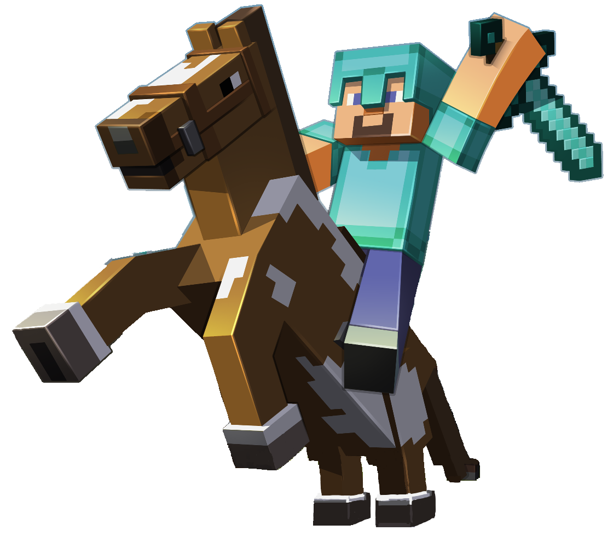
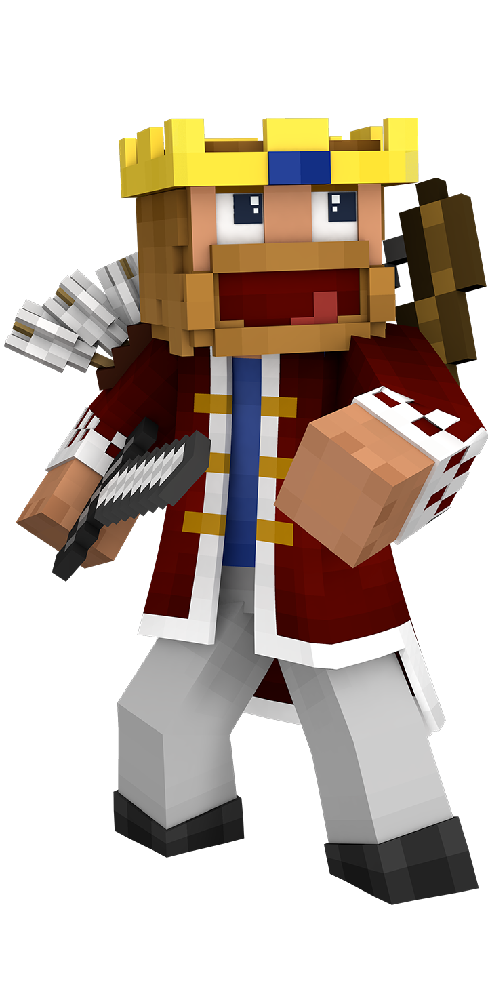

<div class="ground">
  <br>
  
</div>

<style>
  .ground {
    width: 1080px; height: 780px;
    background: url(bg.jpg) center;
    background-size: cover;
    padding-top: 300px;
    text-align: center;
    perspective: 330px;
  }
  img { width: 200px; }
  img:nth-of-type(5) {
    animation: walk 10s forwards linear;
    animation-delay: 1s;
  }
  @keyframes walk {
    0% { transform: translateY(50px); }
    90% {
      transform: translateY(-200px);
      filter: grayscale(0%);
    }
    100% {
      transform: translateY(-150px) rotateX(35deg);
      filter: grayscale(100%);
    }
  }
  img:not(:nth-of-type(5)), .ground {
    animation: look 10s forwards linear;
    animation-delay: 1s;

  }
  @keyframes look {
    90% {
      transform: rotateX(0deg);
      filter: grayscale(0%);
    }
    100% {
      transform: rotateX(35deg);
      filter: grayscale(100%);
    }
  }
</style>

<style>
  html, body {
    margin: 0;
    background-color: black;
  }
</style>